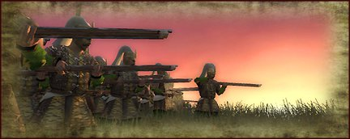
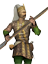
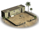
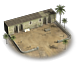
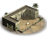
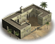
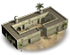
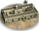
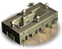

The Janissary were quick to adopt firearms and use them with the same expertise they had shown with their bows.
Janissaries, 'Yeni ceri' , meaning new soldier in Greek are recruited by a levy of Christian boys within the empire, and trained from a young age. As an elite corps they have the best armour and equipment, and are the first in the Turkish army to use the newly invented musket. This heavy gun has a respectable range and can penetrate almost any armour, and is almost guaranteed to inflict a wound that kills or maims.

Quality: Elite
Soldiers: 77
Melee: 7
Missile: 26
Charge: 4
Weapon Type: Firearm
Defense: 12
Armour: 4
Defense Skill: 8
Shield: 0
Hit Points: 1
Recruitment Cost: 965
Upkeep: 265

- Town Watch

- Town Guard
- City Watch
- Militia Drill Square
- Militia Barracks
- Army Barracks
- Royal Armoury
Janissary Musketeers are available in Cities with a Royal Barracks after the Pike and Shot event in the year 1530.